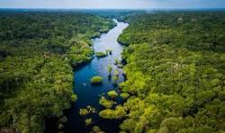
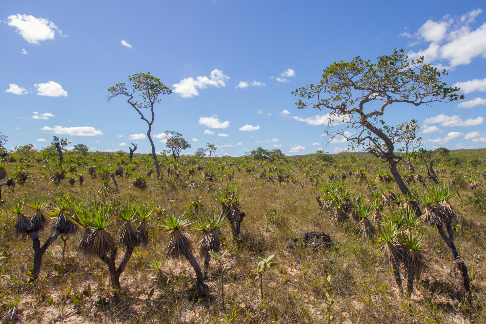
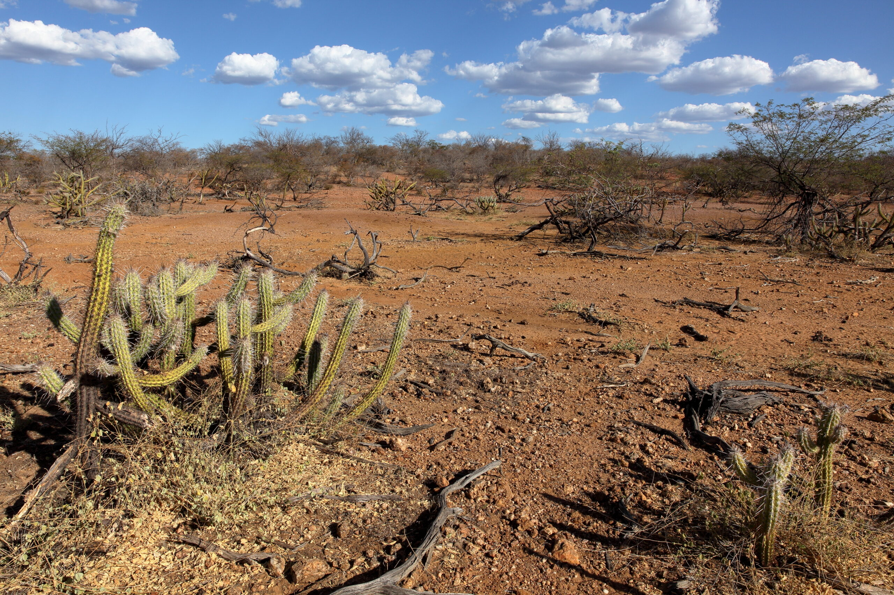
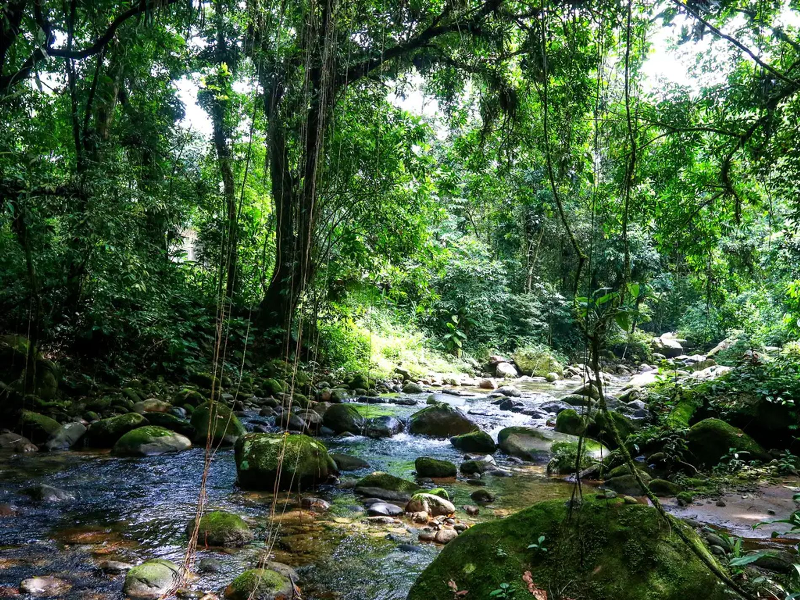
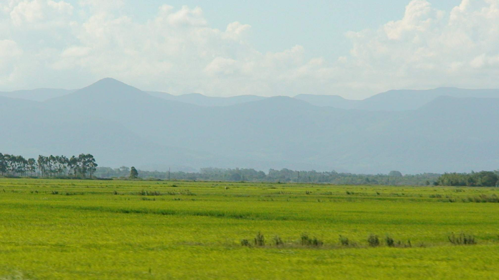

Biomas

Amazônia
A maior floresta tropical do mundo, rica em espécies de plantas, animais e povos.

Cerrado
Vegetação de árvores baixas, rica em biodiversidade, com clima seco em parte do ano.

Caatinga
Bioma do Nordeste, com plantas adaptadas à seca, como os cactos.

Mata Atlântica
Floresta úmida e rica em espécies, mas muito desmatada com o tempo.

Pantanal
Maior área alagada do mundo, com paisagens que mudam conforme as cheias.

Pampa
Campos abertos do Sul, com árvores raras e muito usados na agropecuária.